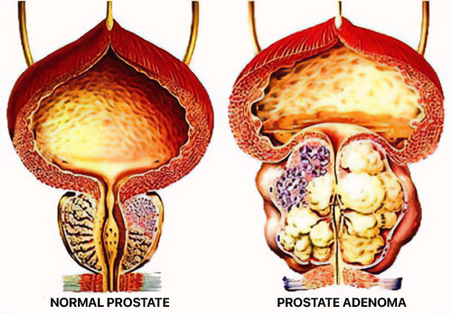

Em Portugal não sabem tratar a prostatite! O acadêmico japonês de 95 anos revelou como curar a prostatite e o adenoma da próstata em qualquer idade.
A urologista japonesa, professora e renomada acadêmica, ganhadora do Prêmio Nobel Aretha Tanaka, aposentou-se aos 85 anos, mas não era inativa nem mental nem fisicamente. Dez anos depois de se aposentar, o professor Tanaka continua a escrever na área de urologia. O professor tem 95 anos, mas afirma que problemas de próstata podem ser evitados mesmo nessa idade.
O professor Tanaka diz que o segredo para uma próstata saudável e para a vitalidade masculina está na limpeza dos vasos sanguíneos. Se estiverem limpos e saudáveis, a prostatite e o adenoma nunca incomodarão um homem. E o ex-urologista confirma suas palavras.
Nosso correspondente conseguiu entrevistar o ganhador do Prêmio Nobel. O professor Tanaka deu uma descrição detalhada do método de tratamento da prostatite.
Correspondente: Professor Tanaka, você afirmou repetidamente que uma próstata saudável é a chave para a saúde e longevidade masculina. Porque pensas isso?
Prof. Tanaka: É simples. Cada corpo é um sistema complexo regulado por hormônios. O funcionamento de todos os órgãos e sistemas internos depende da base hormonal geral. Nos homens, o principal regulador da saúde é a próstata. Figurativamente, pode ser chamado de “segundo coração” de um homem.
À medida que envelhecemos, os vasos do sistema geniturinário ficam obstruídos, perdem elasticidade e fornecem menos nutrição aos órgãos. Em última análise, o fornecimento de sangue envolve o fornecimento de oxigênio e nutrientes, bem como a remoção de dióxido de carbono e produtos metabólicos dos órgãos internos. Como resultado, observa-se estagnação da secreção da próstata (um líquido especial - nota do editor). A próstata começa a inflamar e, sem tratamento oportuno, forma-se um adenoma.
Uma foto da recente apresentação do Professor Tonaka no Simpósio Internacional de Urologistas e Andrologistas.
Como resultado, o homem não só tem problemas com a função erétil, mas também enfrenta dificuldades para urinar adequadamente. Ao limpar periodicamente os vasos do sistema urogenital, pode-se evitar a estagnação da secreção e a inflamação da próstata. Como mencionei antes, o principal regulador do corpo masculino é a próstata. Isso significa que, ao limpar os vasos sanguíneos, você pode prolongar significativamente a vida e não apenas curar a prostatite. E isso não é apenas uma teoria. Eu costumava recomendá-lo aos meus pacientes e agora eu mesmo pratico. Além disso, com a deterioração do funcionamento normal da próstata, outras patologias começam a se desenvolver.

Correspondente: Que tipos de patologias são causadas por sangue estagnado na pelve e vasos bloqueados?
Prof. Tanaka: Vasos sanguíneos sujos afetam todo o corpo. Mas, é claro, afetam principalmente órgãos diretamente ligados ao aparelho geniturinário:
A prostatite é uma doença que afeta 85% dos homens com mais de 40 anos.
 O adenoma da próstata é a próxima
complicação após a prostatite.
Em 47%
dos casos leva à formação de um tumor
cancerígeno na próstata.
O adenoma da próstata é a próxima
complicação após a prostatite.
Em 47%
dos casos leva à formação de um tumor
cancerígeno na próstata.
 A epididimite (inflamação dolorosa dos
testículos) ocorre quando a infecção se
espalha a partir de uma próstata inflamada.
A epididimite (inflamação dolorosa dos
testículos) ocorre quando a infecção se
espalha a partir de uma próstata inflamada.
Estas complicações não podem ser evitadas se a prostatite não for tratada! Em Portugal, um em cada dois homens com mais de 40 anos sofre de prostatite alguma vez. Os urologistas sabem disso; Eles sabem que é necessário restaurar o fornecimento normal de nutrientes aos órgãos pélvicos e aumentar a produção natural de testosterona. No entanto, por alguma razão, este tipo de práticas não são comuns na medicina portuguesa.
Em vez disso, eles prescrevem antibióticos, massagem direta na próstata para prostatite e até terapia hormonal. Embora entendam que estes têm um efeito temporário. E é preciso limpar os vasos sanguíneos. A propósito, no Ocidente todos os homens entre 40 e 50 anos fazem isso há mais de meio século. Isso significa que todo mundo sabe como limpar os vasos sanguíneos para combater a prostatite. Por que eles não fazem isso por você é uma grande questão para mim.
Correspondente: Há algum sintoma que possa indicar vasos sanguíneos bloqueados?
Prof. Tanaka: Sim, claro.
Os principais sintomas de um distúrbio no fornecimento de sangue aos órgãos do sistema genital incluem:
- Queimação ao urinar
- Sensação de bexiga cheia
- Fraqueza episódica
- fadiga crônica
- Insônia
- Piora da visão e da audição.
- Hipertensão
- Pele pálida
Porém, mesmo que você não apresente esses sintomas, a limpeza vascular do aparelho geniturinário deve ser realizada periodicamente após os 40 anos.
Correspondente: Você pode compartilhar conosco seu segredo para limpar os vasos sanguíneos e tratar a prostatite?
Prof.Tanaka: Prof.Tanaka: Até recentemente, o processo de tratamento levava vários meses. Eu mesmo colhi as ervas, procurei no mercado ou encomendei online e depois preparei infusões com elas. Agora não faço mais isso porque recentemente meus colegas, com base nas fórmulas que desenvolvi, criaram um medicamento muito bom e acessível para tratar prostatite e adenoma de próstata. Em Portugal chama-se Cannabis Oil. Foi concebido para regular as funções do aparelho geniturinário masculino, o que se consegue através da limpeza dos vasos sanguíneos e da estimulação do bom funcionamento da próstata. Portanto, para nossos propósitos, é o melhor de todos.
É um medicamento muito bom que permite até curar a prostatite crônica e ver os efeitos em 2 a 3 semanas de uso regular. Quero também salientar que este medicamento não contém produtos químicos, apenas extratos altamente concentrados de plantas benéficas para o corpo masculino, por isso não é apenas inofensivo, mas também muito benéfico. Segundo lembranças antigas, ainda me procuram pacientes, inclusive aqueles com prostatite. Ultimamente só recomendo este medicamento. Ele ajuda todo mundo e é muito bom.
Em Portugal o medicamento é utilizado há cerca de um ano, pelo que existem estatísticas oficiais do Instituto Português de Investigação em Urologia, baseadas nos resultados de ensaios clínicos. Aproximadamente 2.000 homens de diferentes idades participaram do estudo. Todos foram submetidos a tratamento.
Importante! Como resultado dos estudos, descobriu-se que outubro e novembro são as melhores épocas para iniciar o tratamento. Devido à estabilização da temperatura média, os processos metabólicos do corpo são acelerados e a eficácia do medicamento aumenta. O tratamento é 37% mais rápido em comparação com outras épocas do ano.
Resultados do estudo para homens (43 a 76 anos) durante o tratamento com o medicamento:
- A prostatite, incluindo a prostatite crónica, foi curada em 99% dos indivíduos.
- A potência aumentou independentemente da idade do sujeito: 97% dos sujeitos.
- Limpeza completa dos vasos do aparelho geniturinário - 99% dos indivíduos.
- Melhoria na eficácia do tratamento de doenças crónicas: 99% dos sujeitos.
- Melhoria geral da saúde: 100% dos sujeitos.
- Ausência de efeitos colaterais ao tomar a medicação: 100% dos sujeitos.
Correspondente: Quanto custa e onde pode ser adquirido?
Prof. Tanaka: Prof. Tanaka: Você provavelmente sabe que muitos medicamentos são caros hoje em dia. Portanto, eu não recomendaria um medicamento caro. É um medicamento muito acessível, especialmente agora que se tornou um elemento-chave no programa de medicina geniturinária.
Graças a isto, qualquer homem em Portugal pode adquirir o nosso produto e esquecer a massagem à próstata! Para participar da campanha e receber um pacote, você tem até quarta-feira, (inclusive) para enviar a inscrição no formulário oficial. Podem candidatar-se homens com mais de 35 anos residentes em Portugal.
Condições para receber o benefício:
-
Apenas para uso pessoal.
Isso é necessário para combater os revendedores que tentam comprá-lo a granel e reembalá-lo com sua própria marca. -
Inscreva-se através da página oficial do
programa.
A página oficial é garantia do fabricante e proteção contra revendedores.
Para receber Cannabis Oil com 50% de desconto, preencha o formulário oficial abaixo:
Comentários:
Jacinto Branco
Como médico, posso dizer que nunca vi a massagem da próstata ajudar no tratamento da prostatite. Apenas uma forma normal de ganhar dinheiro, também degradante para um homem de verdade.
Macério Herran
Ultimamente eu não conseguia nem ir ao banheiro, não conseguia dormir à noite. Receitas populares, comprimidos, fui muitas vezes ao urologista. A única coisa que ajudou foi isso. Recomendo a todos os homens que experimentem. Este medicamento irá surpreendê-lo agradavelmente se você ainda não o experimentou.
Jax Urias
Obrigado aos criadores! Eu tentei, a prostatite desapareceu! Fiz um curso para me consolidar, embora os primeiros resultados tenham surgido depois de uma semana: finalmente consegui urinar normalmente.
Renaldo Centeno
Eu disse adeus ao adenoma em 3 semanas. Aconselho a todos. A única coisa que realmente ajuda. Pedi outro curso para consolidar o resultado.
Elias Melgar
A propósito, por trás dos antibióticos, ouvi e li muita negatividade. As consequências do seu uso podem ser extremamente terríveis. Mas ouvi pela primeira vez que o adenoma causa câncer.
Hubert Lozano
Eu próprio sou médico e confirmo que sem produção normal de hormônios não há saúde. Além disso, os homens sofrem muito mais que as mulheres, deixamos de produzir testosterona e o corpo se desgasta três vezes mais rápido.
Felicitas Palmero
Como solicitar medicamentos? É muito necessário, meu marido sobe nas paredes à noite, figurativamente falando.
Próspero Rossel
Namusoke, aqui está um link para o site oficial do fabricante, mas rápido, tem 50% de desconto.
Felicitas Palmero
Obrigado, já fiz o pedido, mas pode me dizer quanto tempo demora a entrega?
Próspero Rossel
Parabéns, chegará em cerca de 3 dias)
Mauro Virgem
Obrigado, Cannabis Oil ajudou muito rapidamente! Não atrase o tratamento, é melhor livrar-se desses problemas agora do que esperar até que tudo acabe com consequências mais graves.
Manuel de La Vega
O resultado é realmente tão bom? Talvez valha a pena escrever você mesmo.
Itsaso Matías
Meu marido se recusou a fazer uma massagem depois da primeira vez. Vamos pedir, precisamos ser tratados.
Isingoma Mulindwa
Vejo que não só tenho esse tipo de problema, mas graças a Deus encontrei a página do fabricante do produto há cerca de um mês. O urologista ficou surpreso quando terminei o curso: o tamanho da próstata voltou a ser o mesmo de antes da inflamação. E isso sem antibióticos ou outros meios.
Zziwa Sserunkuma
Diga-me pessoal, isso realmente vai ajudar vocês? E então as drogas e os médicos não fazem sentido.
Kizza Mukasa
Não há dúvidas sobre isso. O efeito é muito forte e o mais importante é que não faz mal à saúde. Então, faça seu pedido e mantenha-se saudável!
Tusubira Ssali
Há seis meses fiz um tratamento. Minha próstata voltou ao normal, graças a Deus. No entanto, tive prostatite infecciosa.
Nalwoga Kiwanuka
Meu comentário é mais para as mulheres, se o seu homem tem problemas de prostatite, não demore. Raramente um homem se atreverá a ir ao médico com tal doença. E é constrangedor e degradante receber uma massagem. Mas se você não tratar, você terá câncer.
Walusimbi Magoola
O problema é que você pode ter prostatite aos 30 ou até aos 20 anos. Realmente depende dos vasos sanguíneos. Bem, quase tudo. É por isso que os fumantes estão sempre em risco.
Ssentongo Kagimu
Comecei a beber secretamente da minha esposa, não queria contar a ela que havia um problema. Fiquei surpreso com o efeito! Não só não havia nenhum vestígio de prostatite, mas minha ereção voltou, embora eu já tivesse descartado isso há muito tempo! Você pode imaginar como minha esposa ficou surpresa, ela me conhece há anos!
Xeveria Espírito
Estou muito grato pelas informações sobre esta ferramenta. Meu marido tem problemas de próstata há muito tempo, a última vez que fez sexo foi há cerca de dois anos. Ele até teve um colapso nervoso por causa disso.